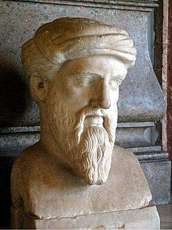

O que é filosofia?
A filosofia é o estudo crítico e racional da existência humana e da realidade que aborda diversos tópicos, como: conhecimento, verdade e moral. Seu principal objetivo é compreender o mundo e o ser humano, utilizando a reflexão e a argumentação. A origem da palavra filosofia vem do grego ("Philosophia") e significa "amor à sabedoria".
O termo costuma ser atribuído ao grande filósofo Pitágoras de Samos (século VI a.C.), que usou a palavra para expressar a busca humana pela sabedoria, reconhecendo que a sabedoria plena pertencia apenas aos deuses.

Pitágoras de Samos foi um filósofo e matemático grego nascido por volta de 570 a.C. na ilha de Samos. Conhecido principalmente pelo famoso Teorema de Pitágoras e por fundar a escola pitagórica, que unia matemática, filosofia, música e espiritualidade.
Foto: Busto de Pitágoras (Museu Capitolino, Roma) / Wikimedia Commons (Domínio Público).Mas afinal, qual o verdadeiro conceito de filosofia?
Durante toda a história, diversos pensadores tentaram explicar o que de fato é a Filosofia. Existem muitas ideias e pontos de vista diferentes sobre o assunto, que não possui um conceito único e definido.
Algumas das diferentes interpretações:
- “A filosofia é a busca pela sabedoria, pois somente os deuses são verdadeiramente sábios.” (Pitágoras)
- “A filosofia é a ciência que investiga as causas e os princípios das coisas.” (Aristóteles)
- “A filosofia é a consciência da própria ignorância.” (Sócrates)
- “A filosofia é a mais alta música.” (Platão)
- “A filosofia é a ciência dos limites da razão humana.” (Immanuel Kant)
- “A filosofia é a busca do sentido, é o caminho para a transcendência.” (Karl Jaspers)
- “A filosofia é a mestra da vida.” (Cícero)
Por que filosofar no dia a dia?
Filosofar no dia a dia, ao contrário do que muitos pensam, não é sobre decorar o nome de pensadores antigos ou falar de forma complicada. É na verdade uma forma de enxergar a vida com outros olhos, oferecendo a capacidade de parar, pensar e questionar uma determinada informação. Como resultado, os pensamentos costumam se tornar mais claros e as ações mais racionais.

" Todos os homens, por natureza, desejam saber. A prova disso é o amor que devotamos aos nossos sentidos; pois, mesmo independentemente de sua utilidade, eles são amados por si mesmos, e, acima de todos os outros, o sentido da visão. Pois não apenas com o fim de agir, mas mesmo quando não tencionamos fazer nada, preferimos a visão a quase tudo o mais. A razão é que este é o sentido que mais nos faz conhecer e que nos revela muitas diferenças entre as coisas." (Aristóteles)
Foto: Busto de Aristóteles (Museu do Louvre, Paris) / Wikimedia Commons (Domínio Público).Analisando a filosofia em situações diárias:
-
Pensamento Crítico: em vez de reagir imediatamente a uma notícia polêmica, você se pergunta: "Qual a fonte disso?", "Isso é um fato ou apenas uma opinião?", "Qual o outro lado da história?".
-
Resolução de Problemas: a filosofia ensina a organizar as ideias de forma lógica e a antecipar consequências. Ao enfrentar uma escolha difícil na carreira ou na vida pessoal, filosofar permite avaliar prioridades e valores reais antes de agir por impulso.
-
Autoconhecimento: grande parte da ansiedade diária vem da falta de clareza sobre o que realmente importa para nós contra o que a sociedade espera de nós.
-
Relações Interpessoais: a filosofia exercita a escuta e a compreensão de pontos de vista diferentes. Ao entender que a sua forma de ver o mundo é apenas uma entre várias, torna-se mais fácil dialogar com paciência em momentos de conflito no trabalho ou na família.
Galeria de filósofos importantes
Conheça alguns dos filósofos que causaram grandes impactos na sociedade:

Sócrates
"Só sei que nada sei."
Imagem: Shutterstock / Brasil Escola.
Platão
"Tente mover o mundo, mas comece movendo a si mesmo."
Imagem: Casa do Saber.
Karl Marx
"Os filósofos têm apenas interpretado o mundo de diferentes maneiras; a questão, porém, é transformá-lo."
Imagem: Revista Movimento.
René Descartes
"Penso, logo existo."
Imagem: A Mente é Maravilhosa.